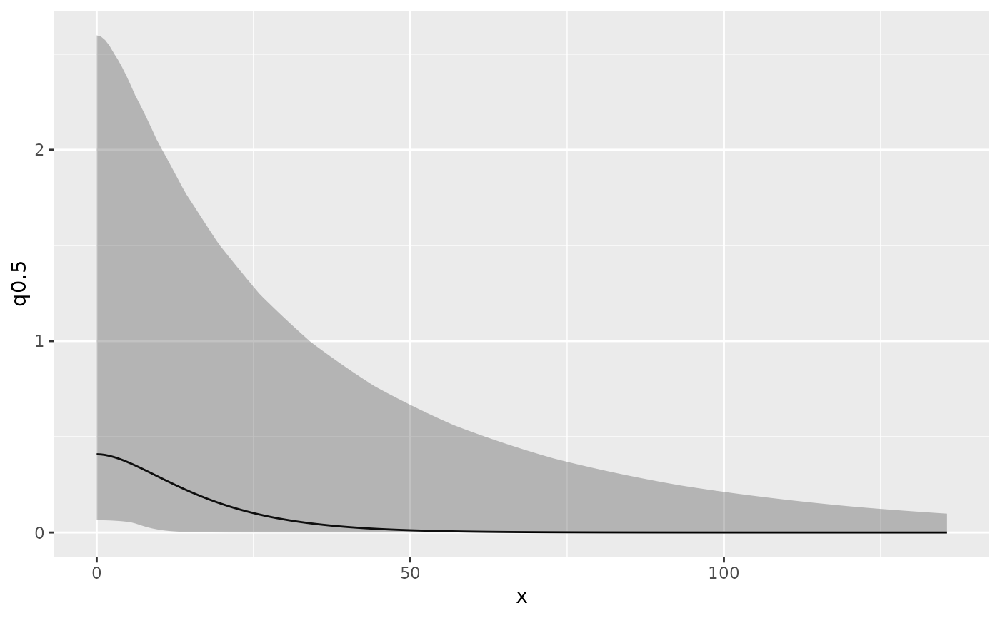

R/spde.R
spde.posterior.RdCalculate posterior distribution of the range, log(range), variance, or log(variance)
parameter of a model's SPDE component. Can also plot Matern correlation or covariance function.
inla.spde.result.
spde.posterior(result, name, what = "range")An object inheriting from inla.
Character stating the name of the SPDE effect, see names(result$summary.random).
One of "range", "log.range", "variance", "log.variance", "matern.correlation" or "matern.covariance".
A prediction object.
# \donttest{
if (bru_safe_inla() && require(ggplot2, quietly = TRUE)) {
# Load 1D Poisson process data
data(Poisson2_1D, package = "inlabru")
# Take a look at the point (and frequency) data
ggplot(pts2) +
geom_histogram(aes(x = x), binwidth = 55 / 20, boundary = 0, fill = NA, color = "black") +
geom_point(aes(x), y = 0, pch = "|", cex = 4) +
coord_fixed(ratio = 1)
# Fit an LGCP model with and SPDE component
x <- seq(0, 55, length = 20)
mesh1D <- INLA::inla.mesh.1d(x, boundary = "free")
mdl <- x ~ spde1D(x, model = INLA::inla.spde2.matern(mesh1D)) + Intercept
fit <- lgcp(mdl, data = pts2, domain = list(x = mesh1D))
# Calculate and plot the posterior range
range <- spde.posterior(fit, "spde1D", "range")
plot(range)
# Calculate and plot the posterior log range
lrange <- spde.posterior(fit, "spde1D", "log.range")
plot(lrange)
# Calculate and plot the posterior variance
variance <- spde.posterior(fit, "spde1D", "variance")
plot(variance)
# Calculate and plot the posterior log variance
lvariance <- spde.posterior(fit, "spde1D", "log.variance")
plot(lvariance)
# Calculate and plot the posterior Matern correlation
matcor <- spde.posterior(fit, "spde1D", "matern.correlation")
plot(matcor)
# Calculate and plot the posterior Matern covariance
matcov <- spde.posterior(fit, "spde1D", "matern.covariance")
plot(matcov)
}
#> Warning: All covariate evaluations for 'Intercept' are NULL; an intercept component was likely intended.
#> Implicit latent intercept component specification is deprecated since version 2.1.14.
#> Use explicit notation '+ Intercept(1)' instead (or '+1' for '+ Intercept(1)').

# }